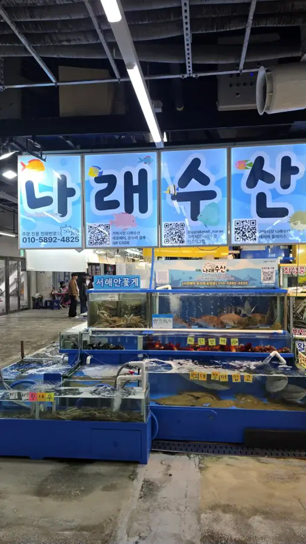
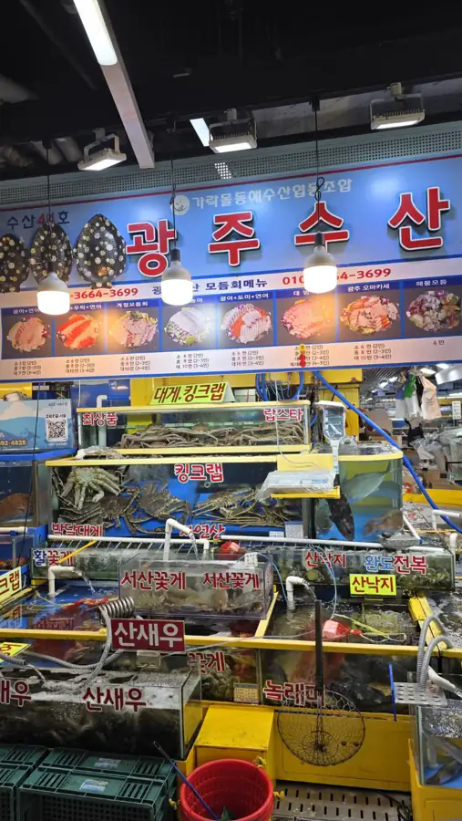
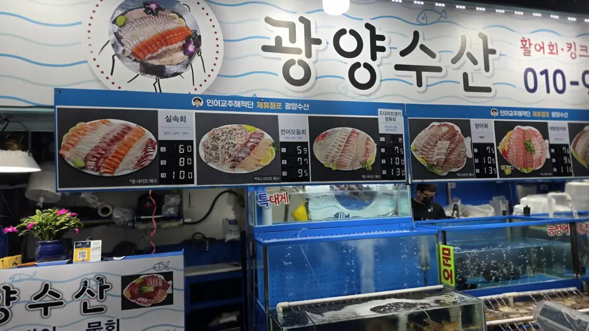

GARAK HANSANG · MERCHANT PREVIEW
시장의 얼굴을
하나씩 만나보세요.
가락몰에서 촬영한 현장 사진으로 구성한 입점 준비 매장 소개입니다.
기존 수산 메뉴를 참고해 각 매장의 특색을 샘플로 보여드립니다.
05현장 사진 매장
100%상세 안내에 샘플 표시
입점 준비 안내 · SAMPLE PAGE
현재 각 입점 업소는 입점을 준비 중이며, 본 페이지는 샘플 페이지입니다.
메뉴·가격은 샘플 또는 촬영 당시 참고 정보입니다. 실제 판매 품목과 가격은 입점 업체 확인 후 확정됩니다.OUR MERCHANTS
입점 준비 매장 둘러보기
상호·판매 정보는 현장 사진과 기존 사이트 구성으로 작성한 샘플입니다.

STORE 01활어 · 꽃게 · 갑각류
나래수산
제철 바다의 싱그러움을 담는 수산 매장
상세 메뉴 보기

STORE 02모둠회 · 대방어 · 해물
광주수산
취향에 맞게 고르는 다양한 회 한 상
상세 메뉴 보기

STORE 03실속회 · 전어 · 참돔
광양수산
실속 구성부터 제철 참돔회까지
상세 메뉴 보기
 STORE 04
STORE 04젓갈 · 수산가공품
광천 토굴젓갈 수산
밥상에 깊은 감칠맛을 더하는 젓갈
상세 메뉴 보기
 STORE 05
STORE 05꽃게 · 대게 · 활어회
용천수산
대게부터 모둠회까지 다양하게 만나는 바다
상세 메뉴 보기
입점 준비 매장 안내
매장 사진은 실제 제공된 현장 이미지를 사용했습니다. 단, 입점 계약 여부·운영 시간·호수·판매 품목·가격은 별도 확인이 필요합니다. 이 페이지에는 실제 결제나 예약 기능이 연결되어 있지 않습니다.
전체 매장 찾기 ↗ 입점 신청 안내 → 상인 커뮤니티 →